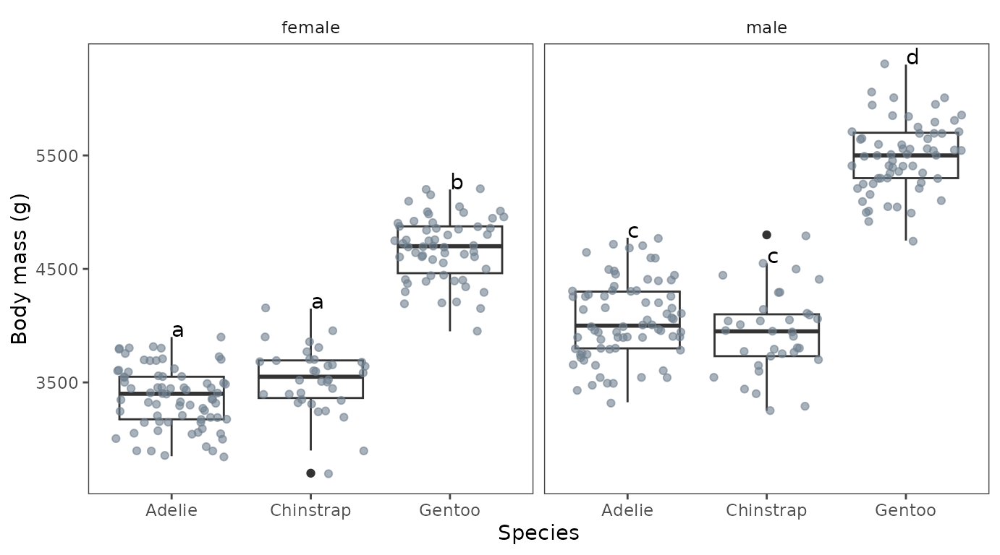
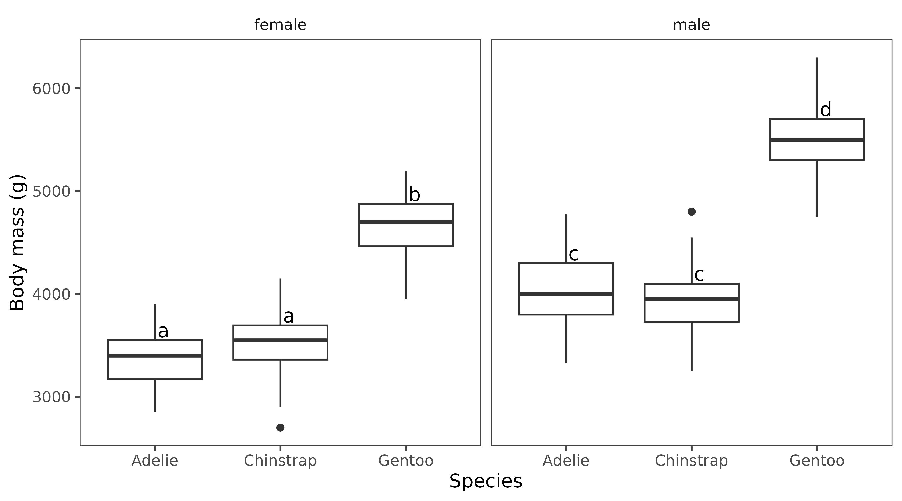
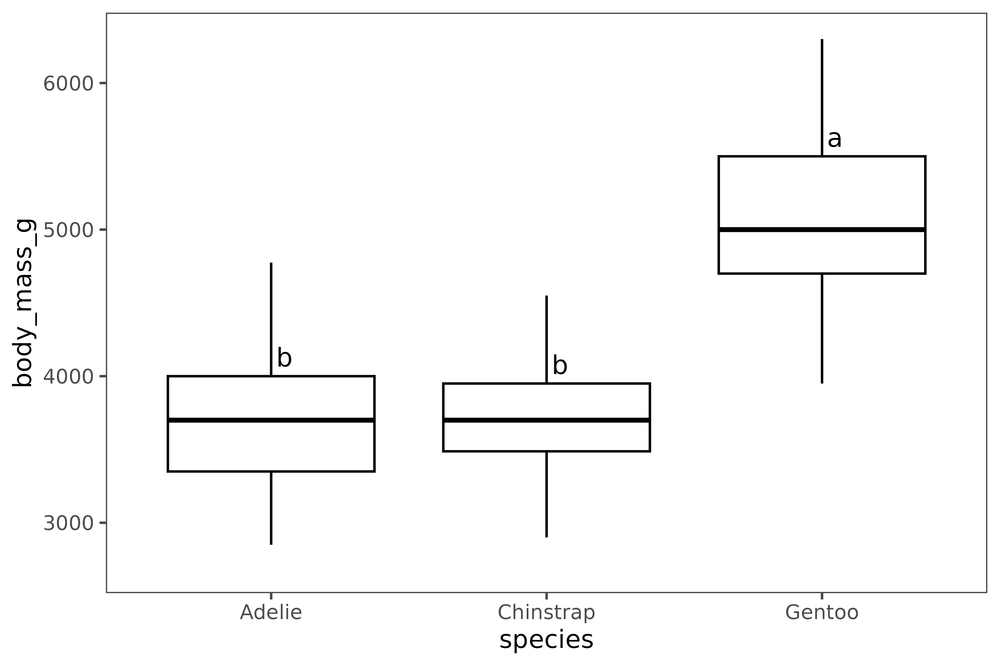
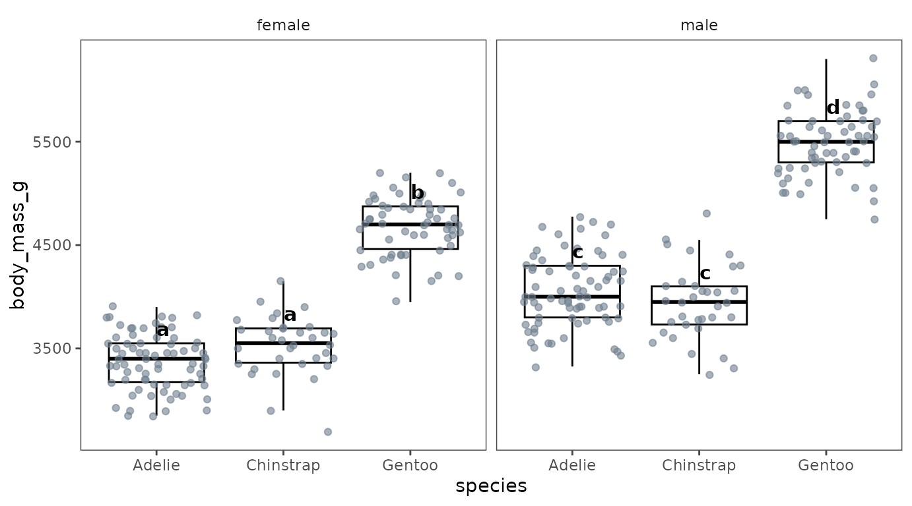
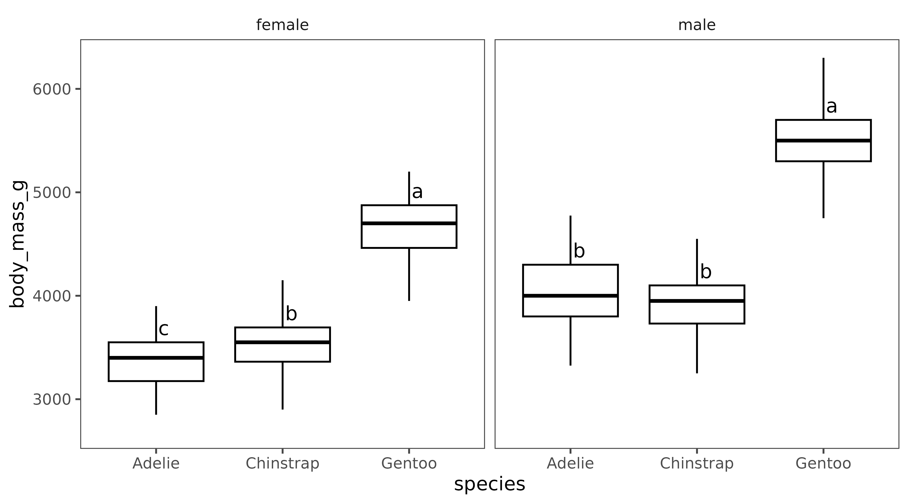
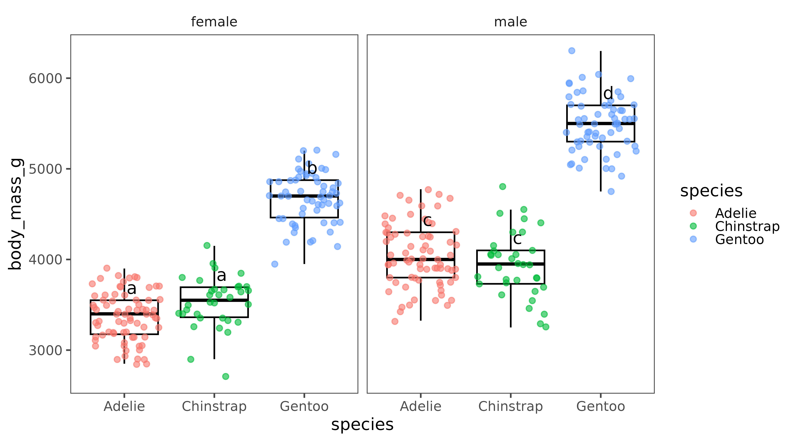
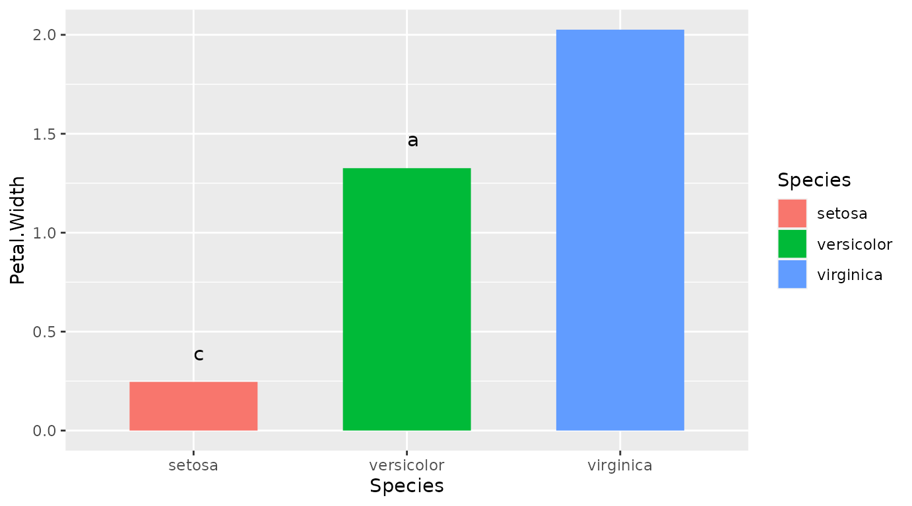
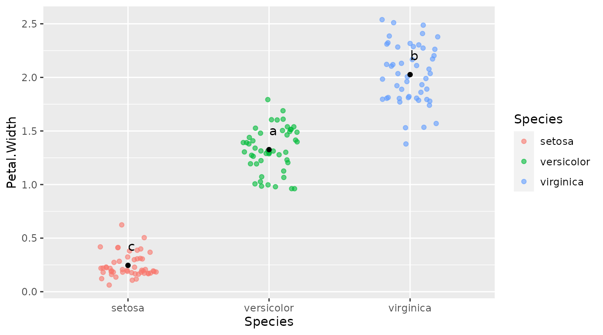

ggtukey
Ethan Bass
ggtukey.Rmd
library(ggtukey)
library(ggplot2)
library(palmerpenguins)
library(Hmisc)
#> Loading required package: lattice
#> Loading required package: survival
#> Loading required package: Formula
#>
#> Attaching package: 'Hmisc'
#> The following objects are masked from 'package:base':
#>
#> format.pval, units
data(penguins)Introduction to geom_tukey
The package includes a geom (geom_tukey) that can be
used to easily overlay compact letter displays onto ggplot2 figures.
penguins |> tidyr::drop_na(sex, species) |>
ggplot(aes(x=species, y=body_mass_g)) +
geom_boxplot() +
geom_jitter(col="slategray", alpha=0.6) +
facet_wrap(~sex) +
geom_tukey(where="whisker") +
ylab("Body mass (g)") +
xlab("Species") + egg::theme_article()
Customization
The geom includes several arguments that can be modified to choose
the statistics that are done to generate the compact letter displays, as
well as adjusting their position on the plot. The test
argument determines what kind of statistical test is conducted, while
the type argument controls whether statistics are done
globally (e.g. with a two-way ANOVA) or
locally (e.g. in separate one-way ANOVAs for each faceting
variable). There are also several arguments that can be used to adjust
the positioning of the letters, including where to choose
the basic position of the labels. Finer adjustments can then be made
using the hjust and vjust arguments to nudge
the letters horizontally or vertically.
penguins |> tidyr::drop_na(sex, species) |>
ggplot(aes(x=species, y=body_mass_g)) +
geom_boxplot() +
facet_wrap(~sex) +
geom_tukey(where="box", vjust = -0.2, hjust=-0.2) +
ylab("Body mass (g)") +
xlab("Species") + egg::theme_article()
Introduction to boxplot_letters
The package also includes a convenience function
boxplot_letters for quickly creating boxplots with compact
letter displays using even simpler syntax.
Creating a simple boxplot
boxplot_letters(data=penguins, x=species, y=body_mass_g, vjust=-0.5, hjust=-0.3, type="global")
Creating multipanel plots
boxplot_letters also supported faceting using the
group argument. For example, we might want to break our
penguin data down by sex:
boxplot_letters(data=penguins, x=species, y=body_mass_g, group=sex, vjust=-0.5,
hjust = -0.2)Or look for sex differences within each of our three penguin species:
boxplot_letters(data=penguins, x=sex, y=body_mass_g, group=species, vjust=-0.5, hjust=-0.2)
When there is a grouping variable, there are (at least) two possible
ways to run the statistics that may yield different results. By default
a global test is conducted where TukeyHSD is
run on a full ANOVA (aov)
with species and sex as an interaction, returning all pairwise
comparisons of these two factors. If the comparisons are independent,
type="local" can be selected to run independent Tukey tests
within each group.
boxplot_letters(data=penguins, x=species, y=body_mass_g, group=sex, type="local", vjust=-0.5, hjust=-0.2)
Raw data can also be plotted in various ways using the
raw argument to specify the desired geom for plotting raw
data: e.g. geom_point (points),
geom_dotplot (dots), geom_jitter
(jitter).
boxplot_letters(data=penguins, x = species, y = body_mass_g, group = sex, vjust = -0.5, hjust=-0.2, raw = "jitter", alpha=0.6, pt_col=species)
Other types of plots
Dynamite plot
To create a dynamite plot (which I do not advocate):
data(iris)
p<-ggplot(data = iris, aes(x=Species, y=Petal.Width)) +
geom_bar(aes(fill=Species), position = "dodge", stat = "summary", fun = "mean", width=0.6) +
stat_summary(fun.data = mean_cl_normal, geom = "errorbar", width=0.3) +
geom_tukey(where="mean", vjust=-1.5)
p
Dot plot
data(iris)
p<-ggplot(data = iris, aes(x=Species, y=Petal.Width)) +
geom_jitter(aes(color=Species, fill=Species), alpha=0.6, width=0.2) +
geom_point(aes(fill = Species), position = "dodge", stat = "summary", fun = "mean") +
stat_summary(fun.data = mean_cl_normal, geom = "errorbar", width=0.3) +
geom_tukey(where="mean", vjust=-1.5) + guides(fill = "none")
p
#> Warning: Width not defined
#> ℹ Set with `position_dodge(width = ...)`